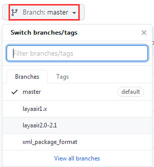

LayaAir
安装
- 点击跳转，使用git clone仓库或者切换到对应laya版本的分支下载并解压。

解压后1.x或2.0-2.1版本的目录结构为：...
└── FairyGUI-layabox
├─bin
│ fairygui.d.ts
│ fairygui.js
│ fairygui.min.js
│
├─libs
│ └─rawinflate
│ rawinflate.d.ts
│ rawinflate.min.js
│
└─source
...
解压后master(>=2.2.0)版本的目录结构为：...
└── FairyGUI-layabox
├─demo
└─source
│ gulpfile.js
│ package.json
│ ...
├─bin
│ fairygui.d.ts
│ fairygui.js
│ rawinflate.min.js
│
├─lib
│ LayaAir.d.ts
│ rawinflate.d.ts
├─src
...
将fairygui.js以及依赖的rawinflate.min.js拷贝到你的laya工程根目录下的bin/libs目录（如果你在编辑器
发布设置-高级设置面板不勾选压缩描述文件，那么rawinflate.min.js是不需要的）。...
└── your-laya-project
├─.laya
└─bin
│ index.html
│ ...
├─libs
│ │ laya.core.js
│ │ laya.html.js
│ │ ...
│ └─fairygui
│ fairygui.js
│ rawinflate.min.js
├─res
...将fairygui.d.ts文件拷贝到你的laya工程根目录下的libs目录。
...
└── your-laya-project
├─.laya
├─bin
└─libs
│ fairygui.d.ts
│ LayaAir.d.ts
│ ...
...
使用
在你的laya工程里添加上述两个库的引用，注意放置的位置。
在1.x版本在bin/index.html中添加：
<body>
<!--核心包，封装了显示对象渲染，事件，时间管理，时间轴动画，缓动，消息交互,socket，本地存储，鼠标触摸，声音，加载，颜色滤镜，位图字体等-->
<script type="text/javascript" src="libs/laya.core.js"></script>
<!--动画库-->
<script type="text/javascript" src="libs/laya.ani.js"></script>
<!--封装了html动态排版功能-->
<script type="text/javascript" src="libs/laya.html.js"></script>
<!--提供了制作UI的各种组件实现-->
<script type="text/javascript" src="libs/laya.ui.js"></script>
<!--如果勾选了不压缩，这个库不需要-->
<script type="text/javascript" src="libs/fairygui/rawinflate.min.js"></script>
<!--只依赖laya.core,laya.html两个模块-->
<script type="text/javascript" src="libs/fairygui/fairygui.js"></script>
...
</body>在2.x版本在bin/index.js中添加：
/**
* 设置LayaNative屏幕方向，可设置以下值
* landscape 横屏
* portrait 竖屏
* sensor_landscape 横屏(双方向)
* sensor_portrait 竖屏(双方向)
*/
window.screenOrientation = "sensor_landscape";
//-----libs-begin-----
loadLib("libs/laya.core.js")
loadLib("libs/laya.ui.js")
loadLib("libs/laya.physics.js")
loadLib("libs/laya.html.js")
//-----libs-end-------
// 尽量不要放在上面注释中间，因为会被ide'项目设置-类库设置'所覆盖
loadLib("libs/fairygui/rawinflate.min.js");// 如果勾选了不压缩，这个库不需要
loadLib("libs/fairygui/fairygui.js");// 只依赖laya.core,laya.html两个模块
loadLib("js/bundle.js");
注：FairyGUI只依赖laya.core， laya.html两个模块，不需要laya.ui。
使用FairyGUI编辑器完成UI编辑。发布目录请选择Laya工程的bin/res目录（当然其他目录也是可以的）。发布后得到如下两个（或以上）文件。

在程序启动时（或者在需要用到这些UI的适当地方）加载这两个文件，并完成初始化。
onLoaded(): void { |
小游戏开发必读
- 因为rawinflate这个库在小游戏平台有问题，所以直接不使用它。请使用最新编辑器，在发布对话框，全局设置里不勾选“压缩描述文件”就可以了。rawinflate这个库就不会再引用到（也不需要打包了）。
小游戏不支持fui扩展名，所以在发布界面要把扩展名修改成小游戏支持的扩展名（自己查阅小游戏文档）。然后在代码里设置：
fairygui.UIConfig.packageFileExtension = "你定义的扩展名";
在发布对话框，全局设置里勾选“使用二进制格式”。
- AddPackage有两种方式，一种是传统的传入文件名方式，另一种是直接传入fui整个文件的内容，也就是说不管你内容是从哪里来的。两种方式可以按需选择。
- 如果遇到加载失败，请检查laya的加载流程。因为FairyGUI不负责加载，你需要确保资源已经顺利加载了再AddPackage。